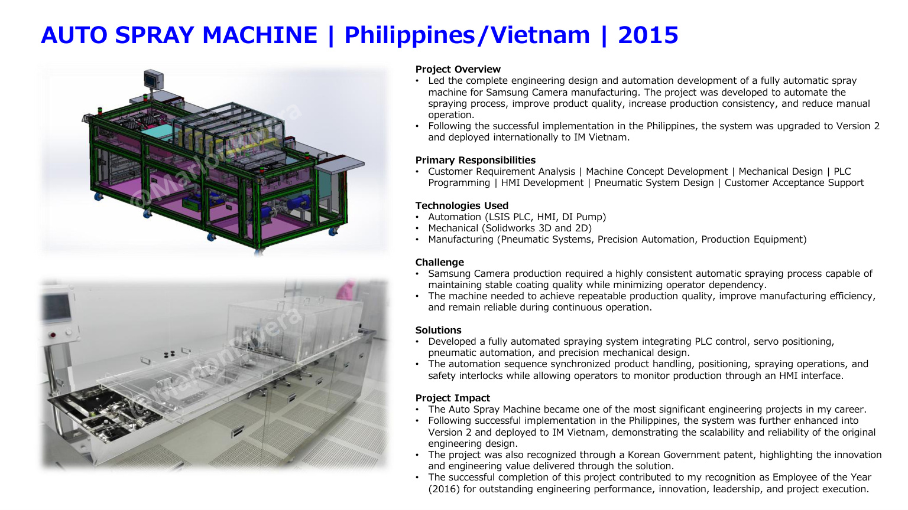

← Back to projects
R&D • Philippines / Vietnam • 2015
Automatic Spray Machine
Complete machine design and automation platform later upgraded and deployed internationally.
LSIS PLCHMIDI pumpSolidWorksPneumaticsPrecision automation

Overview
Engineering context
Led complete engineering design and automation development for a fully automatic spray machine used in camera-product manufacturing.
Responsibilities
My contribution
Customer requirement analysis, machine concept, mechanical design, PLC/HMI programming, pneumatic design and customer acceptance support.
Challenge
What needed to be solved
Achieve consistent coating quality, repeatable positioning, reduced operator dependency and reliable continuous operation.
Solution
Engineering approach
Integrated PLC control, servo positioning, pneumatics, product handling, spraying sequence, HMI monitoring and safety interlocks.
Impact
Project outcomes
- Deployed in the Philippines and Vietnam
- Version 2 developed
- Korean Government patent recognition
- Employee of the Year contribution